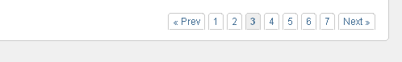

paginator
The paginator tag can be used to quickly create a 'Google' style paginator like the following -

The paginator tag can be used within the pages, comments and search tags. Example -
<cms:paginator />
Please see Core Concepts - Pagination for a detailed usage example.
Parameters
- simple
- position
- adjacents
- prev_text
- next_text
simple
If instead of the Google style paginator, you wish this tag to display a simple 'next' and 'prev' paginator, set this parameter to '1'.
position
By default this tag displays the paginator at the bottom after the last record. To make the paginator appear at the top, set this parameter to '1'. The default valie is '0'.
adjacents
The number of buttons that are always displayed can be changed by this parameter.
prev_text
The text used in the 'prev' button can be set by this parameter. The default is '« prev' (« prev)
next_text
The text used in the next' button can be set by this parameter. The default is 'next »' (next »)
Variables
This tag is self-closing and does not set any variables of its own.